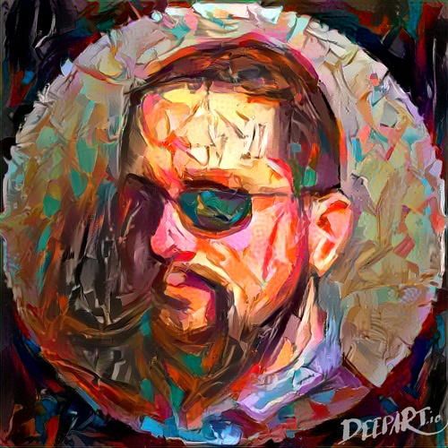
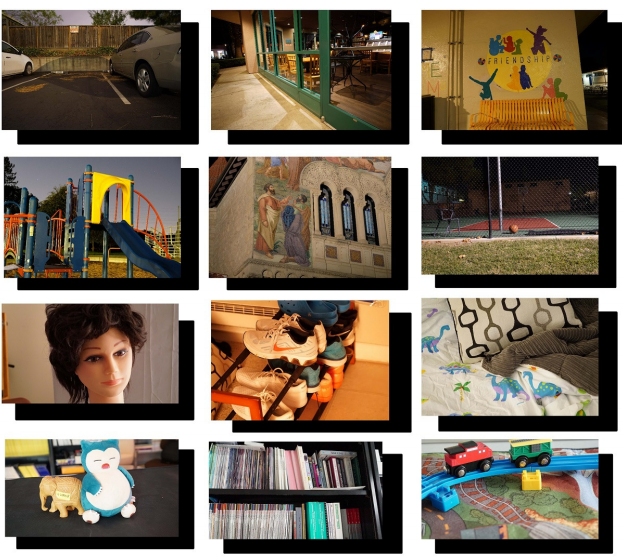

Overview
This website will go over the key overviews listed below
| Topic | Description |
|---|---|
| Societies and Cultures | The impacts (+ and -) of the emerging technology on societies and cultures around the world |
| Local and World Economy | The impacts (+ and -) of the emerging technology on the local and world economy |
| Environment | The impacts (+ and -) of the emerging technology on the environment, and how you would suggest lowering the negative impacts |
| Human Health | The impacts (+ and -) of the emerging technology on human health, and how you would suggest lowering the negative impacts |
| Ethics | Any ethical issues that could propagate from the development or implementation of this technology. Propose strategies to encourage ethical practices related to the emerging technology based on the ethical issues you discussed above. |
| Career Pathways | New career opportunities that will exist when this emerging technology is integrated into society. Post-secondary education requirements for these careers. |
| Other Fields of Study | What other fields of study are incorporated into the emerging technology? How is this vital to how the technology works? |
Society and Culture
Artistic Expression
Paper: A Style-Aware Content Loss for Real-time HD Style TransferIn every work of art, the artist himself is present



| Method | Deception Rate | Expert Score |
|---|---|---|
| Content Images | 0.002 | - |
| AdaIn | 0.074 | 0.132 |
| PatchBased | 0.040 | 0.048 |
| Johnson et al. | 0.051 | 0.044 |
| WCT | 0.035 | 0.044 |
| CycleGan | 0.139 | 0.044 |
| Gatys et al. | 0.147 | 0.178 |
| This Paper | 0.393 | 0.495 |
Society
Mobile use is growing faster than all of Google's internal predictions


Local and Global Economy
Local Economy
Paper: Learning to See in the DarkDarkness cannot drive out darkness; Only light can do that.


Global Economy
The way the world is going, it's technology driven. And it isn't just driven by the old super powers, it's driven by the far east and new emerging economies.
Environment
Paper: Let there be Color! Joint End-to-end Learning of Global and Local Image Priors for Automatic Image Colorization with Simultaneous ClassificationPhotography to me is catching a moment which is passing and which is true